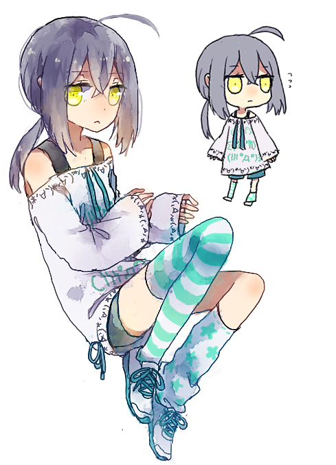
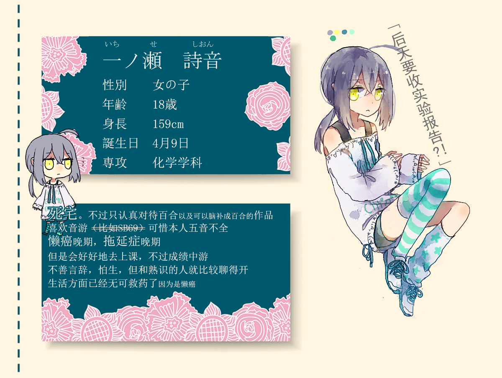

突然心血来潮？可能也算不上心血来潮，总之就是想着既然搭了一个属于自己的站，是不是该总结一下以前自己的东西呢。
也算不上黑历史，因为真正的黑历史我是绝对不会拿出来给大家看的
强制恋爱是很久以前……2015年左右的时候。在ElfArtWorld上参加的一个企划。（ElfArtWorld是什么？）
实际上在企划里也没怎么活动企划就结束了，可以说我是相当鸽了（x
用来参加企划的女儿应该算是我第一个完全原创的女儿w（清水汐不是完全原创的……毕竟那个世界观是精灵宝可梦的同人世界观）

名字叫一之濑诗音，其中也没什么深意……就是想要一个跟汐（しお）发音比较相似的名字所以叫了诗音（しおん）

这是具体一点的角色设定w 在ElfArtWorld上也有角色卡的页面。
当时活动的内容基本上是跟扣子家的角色互动（锁死cp若松兔），也没有什么特别其他的内容。当时我写的内容整理了一下，已经发到文字站那边去了，扣子创作的内容的话……我问一下她能不能搬好了（。
（2020-04-20追记：已经得到扣子的许可ww）
吃自家女儿的粮真的很开心，不过反过来一想早在那个时期我就已经成了“脑内爽完就行懒得写下来”派了啊……码字确实是个很累的事情呢。
倒也不是要把ElfArtWorld上的内容删掉的意思…没有那个打算，毕竟是宝贵的过去的回忆。扣子直到最近好像也还在ElfArtWorld玩得很开心的样子，只是我实在是……我知道自己很咕所以也不怎么敢去参加企划，没有企划就会变得更咕，就像这样恶循环了下去。
我还是很怀念当时能跟扣子一起咕企划的（啊？），现在她变忙了我也变忙了，大概是没有那个时间再一起玩了吧……
我还记得我和她是在东方Project认识的，现在东方……我也好久没碰过啦（嗯？明明前两天还在B站循环欲望煤气灶来着？